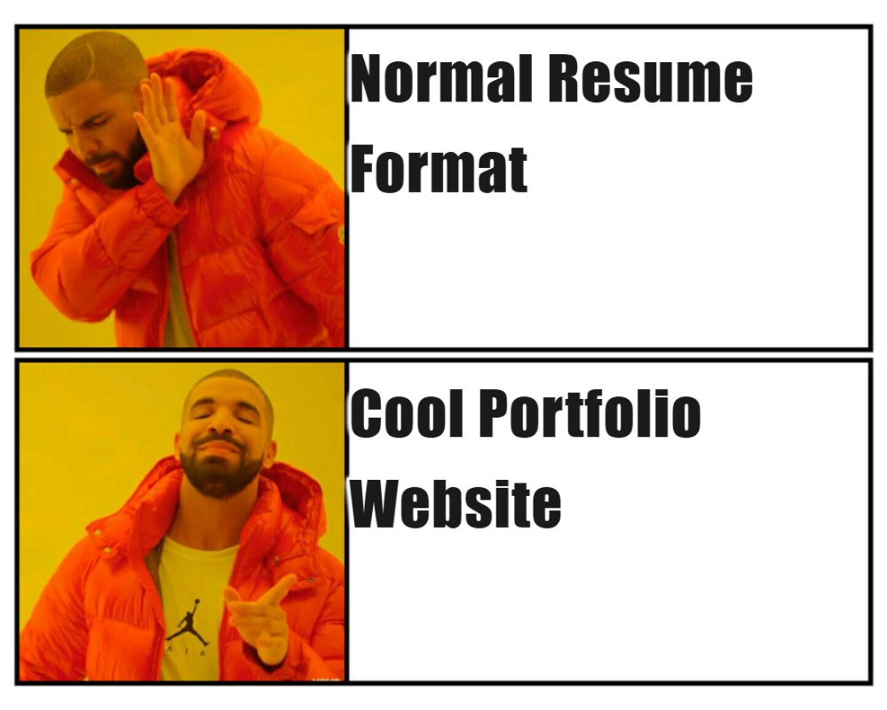
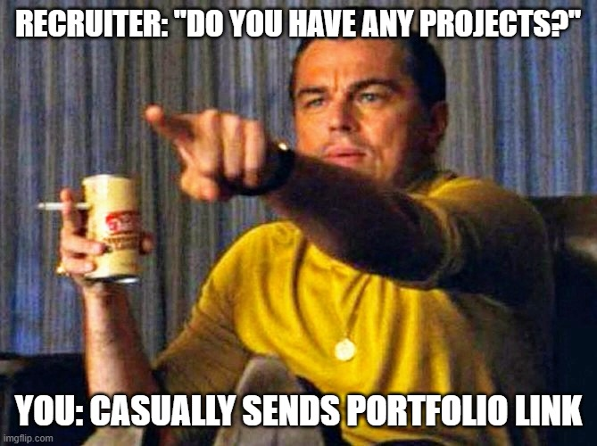
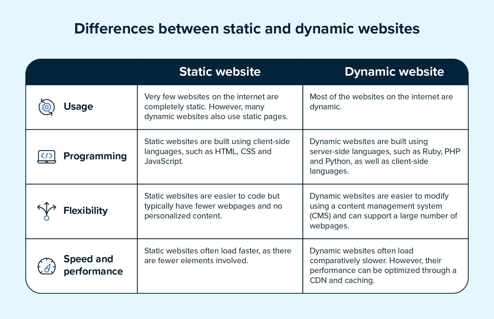
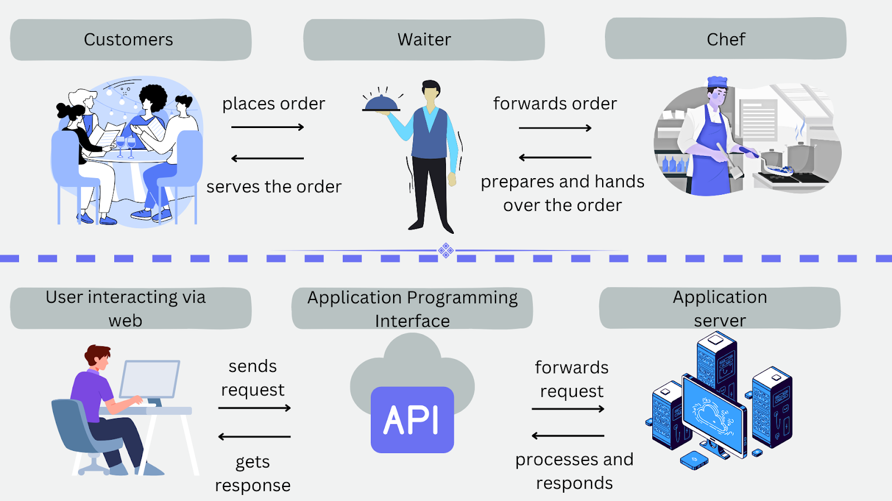

Build Your Own Portfolio Website Using Base44
Learn how to create and publish a professional portfolio website using AI-powered prompts
Workshop Overview
Want a website to showcase your projects, skills, and achievements without spending hours coding? This workshop introduces you to Base44, a low-code platform that helps you build and publish a professional portfolio website using simple prompts.
You'll discover why portfolios are important, explore different design templates, and customize your website to showcase your skills, projects, achievements, and contact information. By the end, you'll have a live portfolio link ready to share on LinkedIn, resumes, and internship applications.
What you'll learn
- What a portfolio website is and why it matters
- How to use Base44 to create websites with prompts
- How to customize templates to match your style
- Common troubleshooting techniques
- How to publish and share your website online
What is a Portfolio and Why is it Needed?
A portfolio is a collection of your personal work, achievements, and skills presented on your own terms. In the digital world, it's a personal website that acts like your online resume, but cooler. Unlike a CV, you're not following a format; you're presenting yourself the way you want.

A resume follows a fixed format. A portfolio lets you show, not just tell — visitors can view or interact with your actual work, not just read about it.
Helps you stand out when applying for internships, jobs, or any major opportunity.
Let visitors try or view your work directly rather than just reading a description.
Build your personal brand and establish yourself in your field.
One link is all you need to show people what you've got.
Even without experience, a portfolio is powerful. It shows potential, creativity, and willingness to learn, not just past achievements.
Final Expected Output
By the end of this session, you'll have a fully published portfolio website with the following sections:
- A personal homepage with your name and intro
- A section highlighting your skills
- A projects section showcasing your work
- A contact section with email or social links
- A fully functional, published link ready to share

Static vs Dynamic Websites
Your portfolio is a static website, where the content is fixed and only changes when you manually update and republish it. Every visitor sees the exact same pages. Dynamic websites, by contrast, generate content based on user's data, logins, or live information. Think of it as a social media feed website or a live dashboard website showing your GitHub commits.
Static sites are faster to load, simpler to host, and cheaper to run, which is why they're perfect for portfolios. Base44 generates static-style output when you hit Publish, bundling everything into files that can be served instantly to anyone who visits your link.
The key takeaway is that because your site is static, every time you want to update your projects or bio, you need to edit and republish. There's no database updating in real time behind the scenes.

Frontend Basics
Every website is built using three core technologies: HTML, CSS, and JavaScript. Together, they form the foundation of modern web development.
HTML provides the structure of a webpage, CSS controls its appearance and styling, and JavaScript adds interactivity and dynamic behavior.
A simple way to remember them is: HTML is the structure, CSS is the style, and JavaScript is the behavior.
Platforms like Base44 simplify website creation by generating much of this code for you, allowing you to focus on design and content rather than implementation details.
Hosting & Domains
Once a website is built, it needs to be hosted so that people can access it over the internet. Hosting is the service that stores your website's files on servers and makes them available to visitors 24/7.
Every website is also accessed through a domain name, which is the address people type into their browser, such as example.com. Domains make websites easier to find and share than using server IP addresses.
Many website building platforms provide free hosting along with a generated subdomain, allowing users to publish their websites without managing any server infrastructure themselves.
In the case of Base44, your portfolio is hosted for you and receives a shareable .base44.app link, making it easy to publish and share your work online.
APIs
An API (Application Programming Interface) is the way two pieces of software talk to each other. Lets say that you're a customer at a restaurant, the kitchen is the server, and the waiter is the API. You place an order (a request), the waiter takes it to the kitchen, and brings back your food (the response). You never go into the kitchen yourself.
Your portfolio's contact form is a real-world example of an API in action. When someone fills in their name, email, and message and hits Send, that data is sent as a request to a backend service (like an email API) which then delivers the message to your inbox. Base44 handles wiring this up automatically so you never see the underlying calls.
APIs are everywhere in modern websites such as weather widgets, login buttons ("Sign in with Google"), payment forms, and map embeds all work by making API calls to external services. Knowing they exist helps you understand that a website is rarely just one thing; it is usually many services talking to each other behind the scenes.
Now that we've covered the key concepts, let's move on to understanding how the Base44 platform works and start building your portfolio website.

Introduction to Base44
Base44 is a low-code website building platform that lets you create websites using simple prompts instead of writing code. Instead of manually designing layouts or writing HTML/CSS and JavaScript, you simply describe what you want and let the platform generate the website automatically.
It acts as a bridge between your ideas and a working website which is ideal for beginners who want results without the complexity of coding.
Key Features of Base44
Create full web applications using natural language prompts instead of coding.
Describe your app in plain English and Base44 generates the structure and functionality.
Brainstorm and plan features in a sandbox without affecting your live app.
Databases are created and managed automatically based on your app requirements.
User registration, login, and permissions included out of the box.
Upload and manage files, images, and documents within your app.
Access, customize, and sync code through GitHub for full control.
Multiple team members can work on the same app simultaneously.
Apps automatically adapt to desktop, tablet, and mobile screens.
Modify colors, fonts, and layouts with real-time previews.

Template Options
Choose from four distinct visual styles. Each comes with a ready-to-use Base44 prompt. Just paste it in and go!
Minimal and atmospheric. White space is the main design element where work speaks for itself. Clean nav, full-bleed imagery, and a quiet typographic hierarchy. Suits any creative discipline.
Pages
Colour Palette
Customisation Highlights
- Home:Big light-weight name split across two lines, discipline + location, dark panel with recent projects
- Work:List of projects (title, category, year) : click to expand a full detail page
- About:Square portrait + bio + skills list with no icons, clean text
- Process:4 numbered sections showing how you think
- Contact:Centered, minimal : email link + simple form
Base44 Prompt
Build a portfolio website with 5 pages: Home, Work, About, Process, Contact. Navigation is a clean top bar with the portfolio owner's name/logo on the left and page links on the right. VISUAL STYLE - Mostly white (#FAFAFA) with black (#111) text - One accent colour: purple (#6B46C1) used sparingly — links, hover states, one highlight element per page - Font: light weight (300) for big headings, regular (400) for body — feels editorial and calm - Lots of white space. Never crowded. - Images use a slightly grey placeholder (#E5E5E5) — full bleed where possible HOME PAGE - Split layout: left side has the person's name in large light-weight text (the name breaks across two lines), their discipline and location in small grey text below, and a subtle label "Creative Portfolio" above in tiny caps - Right side: a dark (#111) panel showing 2–3 recent project cards with title and year - Below the split: a one-line statement about their work in medium-sized text, centred WORK PAGE - Simple list of projects. Each row: project title in large text (left), category and year in grey (right), a thin line separating each row - Clicking a project opens a full detail page: full-width image area, title, category, year, Role and Description, optional "View Project ↗" button in purple, "← Back to Work" link at bottom ABOUT PAGE - Left: a square portrait placeholder (#E5E5E5, minimum 280x280px) - Right: name, title, a 3–4 line bio, and a short list of disciplines/skills — no icons, just clean text with a small dash prefix PROCESS PAGE - 4 short sections, each with a bold number (01, 02...) in accent purple, a heading, and a paragraph - Shows thinking and process — not job history CONTACT PAGE - Centred, minimal. One big line: "Let's work together." - Email address as a plain link in purple - Simple form: Name, Email, Message, and a Send button Keep it calm, spacious, and disciplined. The work should feel like it breathes.
Warm, bold, and full of personality. Deep terracotta and cream feels handmade but polished. Big type, asymmetric layouts, strong opinions. For people who want their portfolio to feel like them.
Pages
Colour Palette
Customisation Highlights
- Home:Massive bold name on dark background, discipline as a terracotta pill tag, project previews on cream
- Work:2-column card grid with category filters; each card has a terracotta top border
- About:Dark panel with portrait, cream panel with bio, discipline tags, and a pull quote
- Process:4 sections (01–04) ending with "Why hire me" — the most memorable part
- Contact:Dark background, big "Say hello.", email large in terracotta, simple form
Base44 Prompt
Build a portfolio website with 5 pages: Home, Work, About, Process, Contact. Navigation is a top bar with the name/logo on the left in bold cream text and page links on the right in clay colour. VISUAL STYLE - Dark background: #1A0A00 (espresso) for hero sections and nav - Light sections: #F5E6D0 (cream) for content-heavy pages - Accent: #C4521A (terracotta) — used for labels, tags, highlights, borders - Secondary: #8B5A3A (clay) for subtext and muted elements - Font: heavy bold (800) for headings — big and tight letter-spacing; regular for body - Cards have a left border in terracotta instead of a full border HOME PAGE - Dark espresso background, full viewport height - Person's name in massive bold white text (two lines, tight tracking) - Their discipline as a small terracotta pill/tag below the name - City and availability status in tiny clay text at the bottom - Right side: 2 project cards on a cream background — each card has a terracotta left border WORK PAGE - Cream background, projects as cards in a 2-column grid - Each card: image placeholder with 4px terracotta top border, bold title, one-line description, category tag - Simple text filter: All / Branding / Film / Research / Personal - Clicking opens a full detail page with image area, title, role, description, optional "View Project ↗" button ABOUT PAGE - Split: left dark panel with large name in cream + portrait; right cream panel with bio - Below: "What I do" — horizontal row of discipline tags in terracotta background with cream text - One big pull quote in large italic text, centred PROCESS PAGE - Cream background, 4 sections numbered 01–04 - Large terracotta number, bold heading, short paragraph - Final section titled "Why hire me" — direct and honest CONTACT PAGE - Dark espresso background - Big bold headline: "Say hello." - Email address large in terracotta - Form: Name, Email, Message — cream inputs, terracotta focus border, terracotta submit button Make it feel warm, confident, and human.
Dark, technical, and modern. Inspired by developer tools and engineering platforms. Information is structured, data-driven, and project-focused. Emphasizes technical depth, systems thinking, and professional credibility.
Pages
Colour Palette
Customisation Highlights
- Home:Split hero : left side has name + role + statement, right side has a technical overview panel with key metrics
- Work:Archive-style project list with title, category, year, and tech stack; click to open full case study
- About:Two-column layout : profile card on left, biography on right; skills displayed as structured grouped tags
- Process:Connected workflow with 4 stages — focuses on methodology and systems thinking, not job history
- Contact:Minimal, centered; email, links, resume download option, and a simple form
Base44 Prompt
Build a portfolio website with 5 pages: Home, Work, About, Process, Contact. VISUAL STYLE - Dark theme (#0B0F19) - Surface cards (#111827) - Primary text (#F8FAFC), Secondary text (#94A3B8) - Accent color (#8B5CF6) - Modern technical aesthetic inspired by developer tools - Subtle grid backgrounds and soft glow effects used sparingly - Clean typography with strong hierarchy, large headings (medium-to-bold) - Rounded corners (12–16px), smooth hover transitions, minimal but professional NAVIGATION - Sticky top navigation, name/logo left, page links right - Semi-transparent blurred background while scrolling HOME PAGE - Split hero layout Left: small label above name, large name, professional title, location, one-line statement Right: technical overview panel with key professional metrics - Below hero: featured projects as modern cards — each card has title, tech stack, short description, project link WORK PAGE - Timeline or archive-style layout; each project: title, category, year, tech stack, short summary - Clicking opens a detailed project page: large banner image, overview, problem, solution, tech stack, results, external links ABOUT PAGE - Two-column layout: professional profile card (left), name + title + biography (right) - Below: technical skills as clean tags or grouped categories PROCESS PAGE - Connected workflow — 4 stages, each with step number, title, description - Focus on methodology, problem-solving, and project execution CONTACT PAGE - Centered layout; headline, email, professional links, resume download - Contact form: Name, Email, Message, Send button FOOTER - Minimal: copyright, professional links Feel like a premium engineering portfolio — technical capability, project impact, modern craftsmanship, clean and highly readable.
Loud, fearless, and unapologetically expressive. Feels like an experimental design magazine, a contemporary art exhibition, and a manifesto merged into a portfolio. Massive typography, dramatic color blocks, theatrical interactions. Built for people who want their work to demand attention.
Pages
Colour Palette
Customisation Highlights
- Entry Gate:Your surname fills the full viewport; visitors click to shatter the letters and reveal the homepage
- Cursor:A floating geometric shape that morphs between a circle, crosshair, and rotating square depending on context
- Navigation:Sticky nav bar at the bottom of the screen — unashamed and graphic
- Work:Projects as full-width concert setlist rows; hover floods the row with color; click opens a full-screen slide-up drawer
- Process:4 full-width color bands that snap into full-screen focus as you scroll through them
Base44 Prompt
Build a portfolio website with 5 pages: Home, Work, About, Process, Contact. VISUAL STYLE - Background: #F5F0FF, Secondary background: #EDE8FF, Surfaces: #FFFFFF - Primary text: #0D0D0D, Secondary text: #4A4A4A - Primary accent: #6C3FFF, Secondary accent: #FF4D6D, Highlight: #00E5C8 - No glassmorphism — raw layered elements, overlapping type, bold geometry - Asymmetric layouts, large saturated color blocks, theatrical transitions - Feels like a printed art object that happens to be interactive ENTRY GATE - Full-screen with owner's surname in ultra-bold condensed type filling the viewport - Slow color sweep through the letters, tiny monospace instruction: "press anywhere to continue" - On click, letters shatter outward fast — dramatically revealing Home page NAVIGATION - Sticky bottom navigation strip in solid deep violet - Owner name on left in small caps monospace, page links on right - Active page: high-contrast fill block in highlight accent behind it - Page transitions: full-screen color flash (80ms) CURSOR COMPANION - Floating geometric shape following cursor with slight lag - Morphs: circle near text, crosshair near projects, rotating square near interactive elements - Leaves brief color trail (fades in 0.5s), slowly breathes when idle - Mobile: replaced by scroll progress line on screen edge HOME PAGE - Full bleed asymmetric — name in enormous condensed serif at an angle or stacked - Professional title in tiny uppercase monospace, location in small italic - Large editorial image block (slightly rotated 2deg, animated teal border on load, violet overlay) - Below hero: irregular masonry/overlapping card grid — bold flat rectangles, full accent fills - Hover inverts cards: white background, text adopts the card's accent color WORK PAGE - Full-screen concert poster setlist — each project is a full-width row - Large title left, year in monospace far right, thin 1px divider between entries - Hover: entire row floods with primary accent, title inverts - Click: full-screen case study drawer slides up from bottom (close with large X) ABOUT PAGE - Single column, deliberately narrow, centered like a printed broadside - Name in largest type on page, large rotated color block behind it - Biography in clean body text, ragged right - Skills as dense typographic block in monospace: BRANDING — MOTION — RESEARCH — CREATIVE DIRECTION PROCESS PAGE - 4 full-width horizontal color bands stacked vertically — each a different accent color - Enormous faded stage number behind each band, bold title and description in foreground - Each band snaps to full-screen focus on scroll, previous band compresses upward - Cursor companion changes color to match each band CONTACT PAGE - Full bleed split: left two-thirds = giant "HELLO" or "LET'S TALK" in display type, types itself on load - Right one-third: professional links, resume download, borderless form (bottom-line inputs only) - Submit button: solid full-width rectangle, fill slides left-to-right on hover FOOTER - Single full-width band in primary accent — copyright left, links right Feel like someone made this with conviction and refused to be tasteful about it.
Generating the Website
Once you've chosen a template, go to the Base44 platform, paste the prompt into the input field, and click Go. Base44 will generate your portfolio automatically.

To make changes, either send a new prompt describing the changes you want, or use the Edit Page option in the preview to modify content directly.
Troubleshooting
While using Base44, you may run into some common issues. Here's how to identify and fix them:

- Recheck the prompt for any missing details
- Break long prompts into smaller, clearer instructions
- Regenerate the website
- Simplify the prompt — avoid too many design instructions at once
- Specify a clear structure with fewer competing elements
- Refresh or regenerate
- Ensure each section is clearly named in the prompt
- Avoid overly long paragraphs in one input
- Wait and retry after a few seconds
- Reduce the number of simultaneous edits
- Reload the page if unresponsive
- Reduce the number of elements per section
- Emphasize spacing and minimalism in the prompt
- Avoid stacking too many features on one page
- Specify responsive design in your prompt
- Request mobile-first layout behavior
- Simplify complex multi-column layouts
- Clear cache or refresh the preview
- Reapply changes using a fresh edit prompt
- Ensure edits are specific and not contradictory

Publishing the Website
Once your portfolio is ready, publish it so anyone can access it with a public link.
Review your website
Check all sections : Home, About, Projects, Contact and verify that text and images are correct.
Click the Publish button
Base44 provides a "Publish" or "Deploy" option. This generates a live version of your website.
Generate a shareable link
After publishing, you receive a unique, customizable URL which is your live portfolio link.
Test the link
Open it in a new tab or a different device. Make sure everything loads correctly.
Share your portfolio
Add the link to your LinkedIn, resume, email applications, or college applications.

Any future changes you make will require you to republish or update the live site, depending on the platform settings.